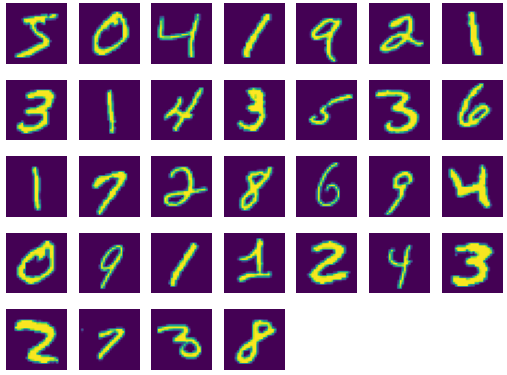
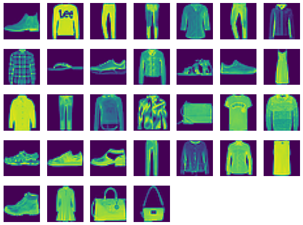
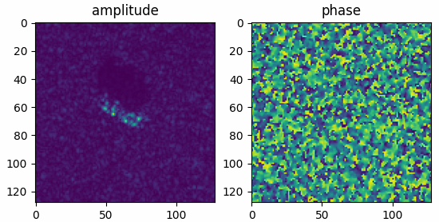
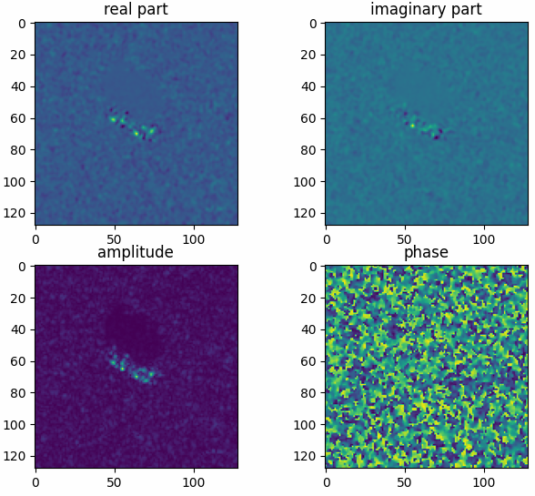

torchbox.datasets package
Submodules
torchbox.datasets.mnist module
- torchbox.datasets.mnist.read_mnist(rootdir, dataset='test', fmt='ubyte')
read mnist dataset
The data can be downloaded from http://yann.lecun.com/exdb/mnist/
- Parameters
- Returns
- Xtensor
image data
- Ytensor
label data
- Return type
Examples
Read and show digital MNIST images
The results shown in the above figure can be obtained by the following codes.
import torchbox as tb rootdir = '/mnt/d/DataSets/oi/dgi/mnist/pics/' dataset = 'test' X, Y = tb.read_mnist(rootdir=rootdir, dataset=dataset, fmt='image') print(X.shape, Y.shape) rootdir = '/mnt/d/DataSets/oi/dgi/mnist/official/' dataset = 'train' X, Y = tb.read_mnist(rootdir=rootdir, dataset=dataset, fmt='ubyte') print(X.shape, Y.shape) plt = tb.imshow([X[i] for i in range(0, 32)]) plt.show() dataset = 'test' X, Y = tb.read_mnist(rootdir=rootdir, dataset=dataset, fmt='ubyte') print(X.shape, Y.shape) plt = tb.imshow([X[i] for i in range(0, 32)]) plt.show() # output (10000, 28, 28) (10000,) (60000, 28, 28) (60000,) (10000, 28, 28) (10000,)
Read and show Fasion MNIST images
The results shown in the above figure can be obtained by the following codes.
import torchbox as tb rootdir = '/mnt/d/DataSets/oi/dgi/fashionmnist/official/' dataset = 'train' X, Y = tb.read_mnist(rootdir=rootdir, dataset=dataset, fmt='ubyte') print(X.shape, Y.shape) plt = tb.imshow([X[i] for i in range(0, 32)]) plt.show() dataset = 'test' X, Y = tb.read_mnist(rootdir=rootdir, dataset=dataset, fmt='ubyte') print(X.shape, Y.shape) plt = tb.imshow([X[i] for i in range(0, 32)]) plt.show()
{kind=link}
{kind=link}
torchbox.datasets.mstar module
- torchbox.datasets.mstar.mstar_header(filepath)
read header information of mstar file
- Parameters
filepath (str) – the mstar file path string.
- Returns
header information dictionary.
- Return type
Examples
The following example shows how to read the header information.
import torchbox as tb datapath = tb.data_path('mstar') filepath = datapath + 'BTR70_HB03787.004' header = tb.mstar_header(filepath) for k, v in header.items(): print(k, v)
- torchbox.datasets.mstar.mstar_raw(filepath, ofmt='c')
load mstar raw data
Each file is constructed with a prepended, variable-length, Phoenix formatted (ASCII) header which contains detailed ground truth and sensor information for the specific chip. Following the Phoenix header is the data block. The data block is written in Sun floating point format and is divided into two blocks, a magnitude block followed by a phase block. Byte swapping may be required for certain host platforms. Tools for reading and manipulating the header information may be found at https://www.sdms.afrl.af.mil .
- Parameters
- Returns
the raw data with size \({\mathbb C}^{H\times W}\) (
'c'), \({\mathbb R}^{H\times W \times 2}\) ('r'or'ap')- Return type
tensor
Examples
Read mstar raw amplitude-phase data and show in a figure.
The results shown in the above figure can be obtained by the following codes.
import torchbox as tb import matplotlib.pyplot as plt filepath = datapath + 'BTR70_HB03787.004' x = tb.mstar_raw(filepath, ofmt='ap') print(x.shape, th.max(x), th.min(x)) plt.figure() plt.subplot(121) plt.imshow(x[..., 0]) plt.title('amplitude') plt.subplot(122) plt.imshow(x[..., 1]) plt.title('phase') plt.show()
Read mstar raw complex-valued data and show in a figure.
The results shown in the above figure can be obtained by the following codes.
import torchbox as tb import matplotlib.pyplot as plt filepath = datapath + 'BTR70_HB03787.004' x = tb.mstar_raw(filepath, ofmt='c') print(x.shape, th.max(x.abs()), th.min(x.abs())) plt.figure() plt.subplot(221) plt.imshow(x.real) plt.title('real part') plt.subplot(222) plt.imshow(x.imag) plt.title('imaginary part') plt.subplot(223) plt.imshow(x.abs()) plt.title('amplitude') plt.subplot(224) plt.imshow(x.angle()) plt.title('phase') plt.show()
{kind=link}
{kind=link}